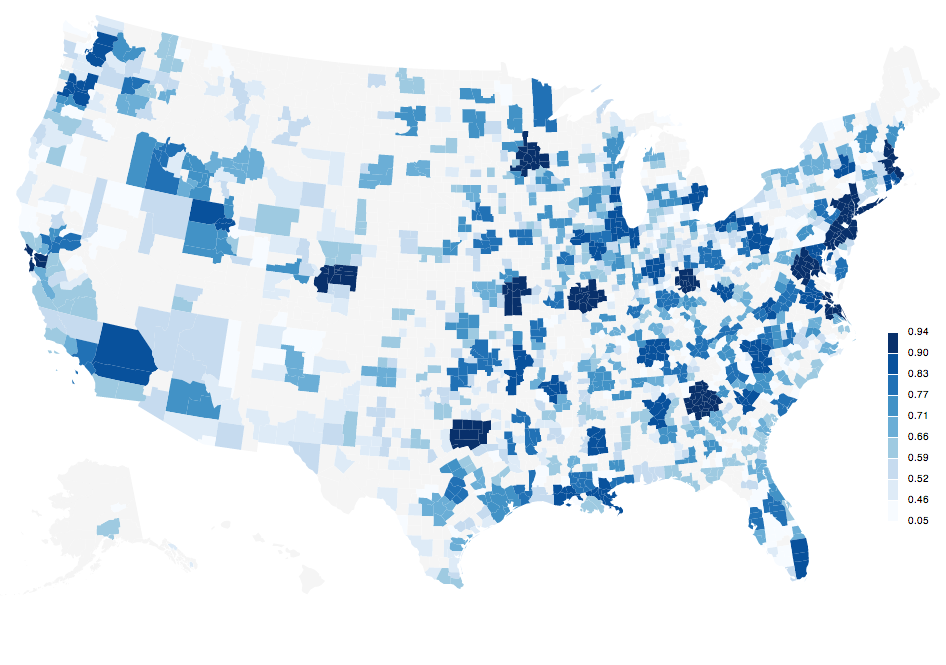

The Metropolitan Atlas is part of the research project Democracy in the Metropolis, conducted as part of his doctoral project by Thomas Favre-Bulle at the Swiss Federal Institute of Technology in Lausanne and the University of Stanford, the Bill Lane Center for the American West, and supported by the Swiss National Science Foundation.
For more information on the project, contact Thomas Favre-Bulle.
The Metropolitan Atlas is a project to assemble, compute and visualize data related to American metropolitan areas coming from various sources. All sources are publicly available in digital formats. The 1950 Census of total population by places has been digitalized at EPFL.
All data processing R files, original data files, as well as the comprehensive assembled database in open SQLite format is available on the GitHub repository metroatlas/dbpublic.
Explore America's local governments in their metropolitan environment from 1950 to 2010.
